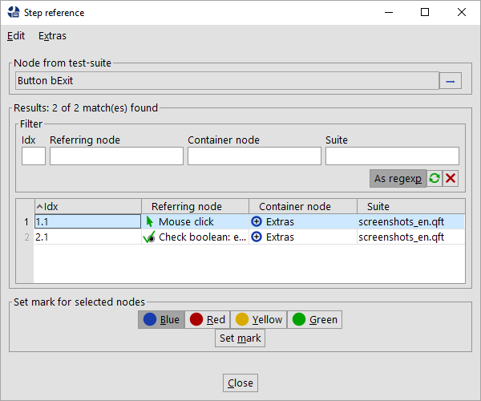

| Version 6.0.3 |
Search operations like locating a reference or searching for a particular value can produce large result sets, as can operations like renaming components or procedures. In order to provide a better overview of all affected nodes QF-Test shows a mass result list at the end of such operations. This list holds all nodes that have been touched by the respective operation. Besides providing an overview that list allows you to apply mass operations on all nodes quite easily. Such mass operations could be toggling a mark at all found nodes or deleting all of them from the test-suites. Those operations can be triggered by the »Edit« menu or a the table's context menu.
|
|  | ||
|
| Figure 56.1: Sample result list for 'Locate references' | ||
The table comes with a context menu as well. This context menu allows you to perform several actions on the shown nodes. If you select entries in the result list and perform a right mouse-click you can raise some very useful actions from that menu like jumping to the node or disabling it. Depending on the type of the list there might be specific actions which only make sense in that particular context. A list of possible actions is provided in section 56.2.
Such result lists are available for the following actions:
If you have lots of entries in the table you can also apply a filter at the top for limiting the nodes to the given filter values. Once you reset the filter you will see all nodes again.
Following actions are available on all types of lists:
.qcv file, for details see
section 56.3
The replacement list provides the capability of replacing only the selected values.
The error list of the run-log provides capabilities to update failing checks in a bunch. It doesn't allow to delete a node from the run-log of course.
In case you have a very large result list that you need to work on within more than one
session, you can store its results in an
external file using the menu action »Extras«-»Export«. The export process creates a
.qcv file, which is more or less a CSV file holding the
information in a QF-Test internal format. To proceed with your work at a later time, simply load the
previously exported .qcv file via »Operations«-»Load result list...« into QF-Test.
| Last update: 9/6/2022 Copyright © 1999-2022 Quality First Software GmbH |